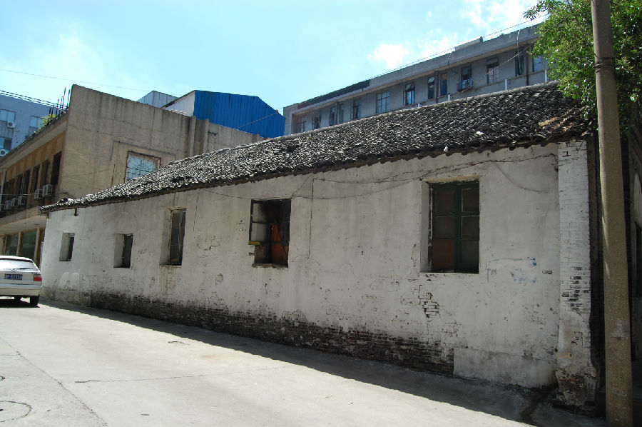

嘉兴市文物保护网 · 市级文物保护点 · 2020-11-09 · 原文

砖桥街民国消防所旧址位于嘉兴市南湖区建设街道砖桥街181号，又名南区龙会，为民国时期的消防人员驻地。一层平房，总建筑占地面积约180平方米。东西长17.51米，南北宽10.25米。全部建筑由小青砖构筑，门窗为西洋式拱顶，屋顶为硬山顶。西山墙上有“南区龙会”四个大字，内部设备亦无存。砖桥街民国消防所旧址作为传统消防建筑在嘉兴保存较少，对于研究嘉兴城市功能的演变发展、市民传统生活，我国的消防发展史都有较高的历史和科学价值。2009年公布为嘉兴市文物保护点。